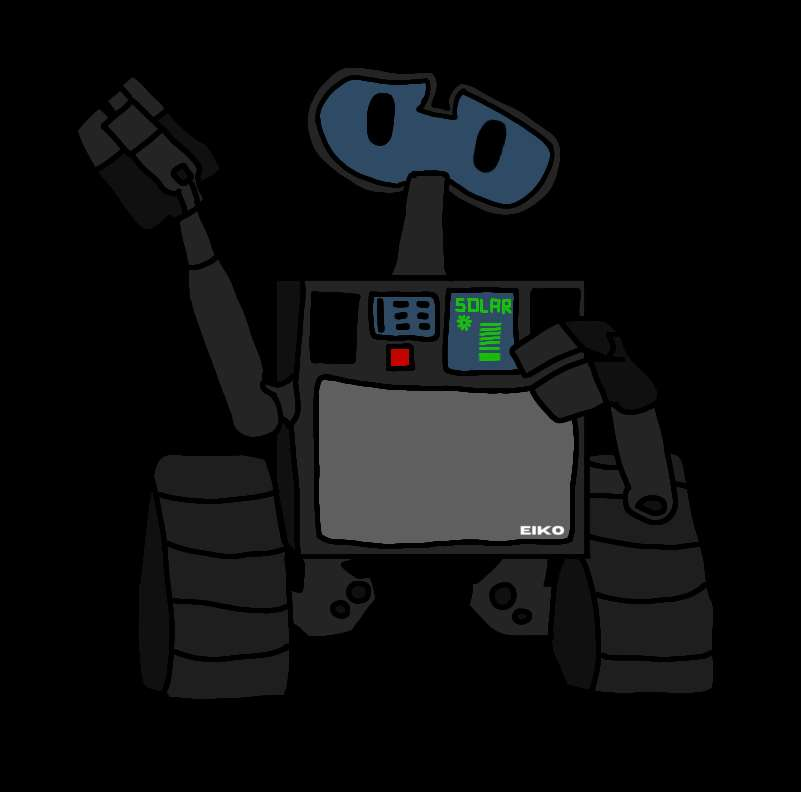
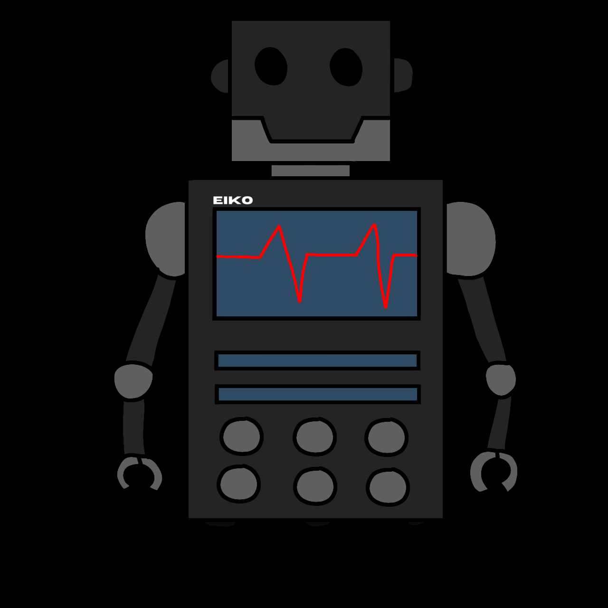
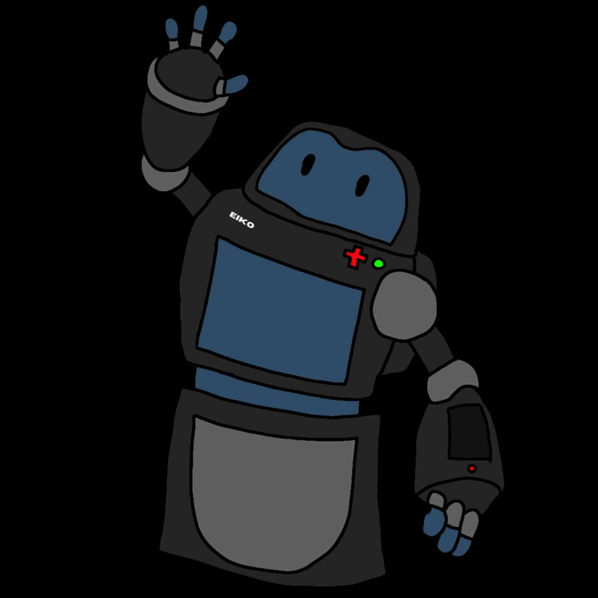

2000 CORPORATION
"Your helping hand assistance since 2000"

EIKO Version 1
This robot design is wall-e inspired. EIKO version 1 was the first launched robot by 2000 corporation. It was invented on the same year the corporation was made. Its function is limited. Hence, it is programmed to only provide assistance in terms of environmental use. It has a sensor that detects litters, trashes, or any kind of garbage. And after, it knows how to segregate trashes properly and even know how to recycle items.
EIKO v.1 can understand people commands, but the robot itself doesn't speak. It can only understand the English language and it only communicates with his head and hands.

EIKO Version 2
It was created during the late 2010's. It is the more advance version of the EIKO 1 (wall-e inspired). Unlike the first version, this manage to understand multiple languages. It can also speak with people, but only knows the English language.Just like the EIKO 1, its function is limited, but this one is more upgraded. It also cleans the environment. And this can also detect earthquakes, it's magnitude and intensity. This also alarms people about the current weather.
EIKO 2 has a knowledge about some of the industrial application, like measuring the medicine to be taken and filtering the water.

EIKO 3000
EIKO. A name inspired by "eco". Just like the environment it draws from, Eiko reflects a commitment to sustainability, growth, and harmony. Let's embrace the Eiko spirit and work together for a greener, brighter future!
Click to know about EIKO 3000
2000 corporation is a robot manufacturing industry.
It was made by
9 shining, shimmering, splendid, students at Fame Academy
of Science
and Technology. Namely, E. Artista, J. Vallestero, F. Ibanez, J. Perez,
A. Onal, S. Barredo, S. Villavicencio R. Del Mundo, and A. Lascano.
The corporation itself started on August 23, 2000.
2000 Corporation at first glance